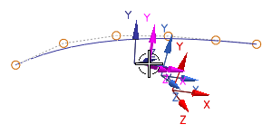
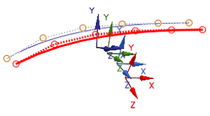
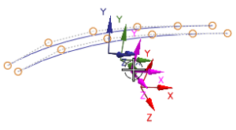
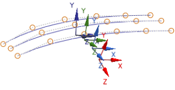
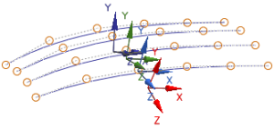

您将创建三个这条曲线的副本，每一个副本将会用和原始曲线关联到当前坐标系一样的方法，分别与一个坐标系关联。
右击样条并选择复制。
|
提示 |
您也可以点击复制 ，或者选择编辑→复制，再或者按 Ctrl+C。 |
选择格式→WCS→定向。
在 CSYS 对话框的类型列表中，选择偏置 CSYS 。
在参考 CSYS 组的参考列表中，选择选定的 CSYS。
选择第二个坐标系，如图所示。

点击确定。
点击粘贴 ，或选择编辑→粘贴。
轻轻旋转视图以更清楚的查看第二条曲线。

不移动 WCS，选择编辑→选择性粘贴。
使用这个复选框，您可以控制目标图层以及目标方位，在这个练习中，您不想使用 WCS，将指定一个目标坐标系。
在对话框的目标组中，从目标 CSYS 列表选择 CSYS。
点击 CSYS 对话框 。
在 CSYS 对话框的类型列表中，选择偏置 CSYS 。
在参考 CSYS 组的参考列表中，选择选定的 CSYS。
选择图所示的这个坐标系。

在 CSYS 对话框中点击确定。
在选择性粘贴对话框中点击应用。
粘贴已经完成。

在选择性粘贴对话框中，确保目标 CSYS 列表中选择的是 CSYS。
在目标组中，点击 CSYS 对话框 。
在 CSYS 对话框的类型列表中，选择偏置 CSYS 。
在参考 CSYS 组的参考列表中，选择选定的 CSYS。
选择直线上的最后一个坐标系(离您最近的红色的一个)。
点击两次确定。

关闭部件。